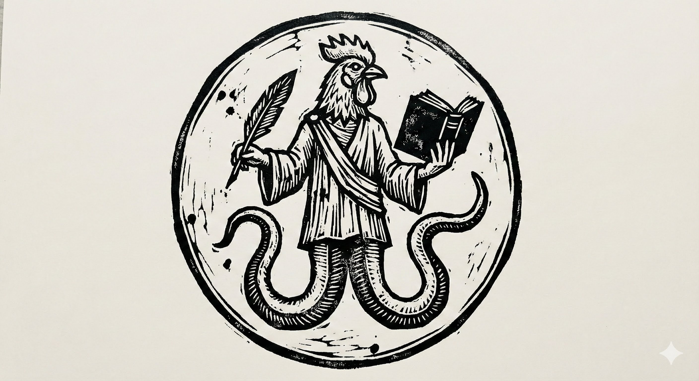

Neutral Repository of Gnosis
Founded and maintained by Aaron Clews, Priest of the Church of Barbelo
The Pleroma Archive is an independent, non-political library-church dedicated to the neutral stewardship and preservation of Gnostic records. It is founded and hosted by the Church of Barbelo, and it is not governed by it: no material is admitted or refused on doctrinal grounds, and nothing preserved here carries the Church’s endorsement. Our mandate is the protection of the documentary heritage of Gnosis — ensuring that ancient and modern insights are never lost to time or institutional censorship.
We do not preach, nor do we evangelise. Submissions are accepted from all who carry the Spark, reviewed by the curator for copyright and integrity, and preserved here for public access in perpetuity.
| Archive Section | Scope | Access |
|---|---|---|
| Restored Texts | Nag Hammadi, Hermetica & related texts | Under Curation |
| Liturgy & Gospel | User-submitted liturgy, personal gospels & sacred writing | Under Curation |
| Modern Commentary | Scholarly & philosophical works | Under Curation |
| User Submission | Community writings & submitted works | Enter Archive |
Submissions are accepted on a single basis: if Sophia speaks through you and you write it down, it belongs here. The curator reviews all submissions for copyright compliance and to ensure the integrity of the archive before publication.
All preserved material is made freely available to the public with attribution to the contributor. A hardback edition of the archive is available for those who wish to support its continuation.